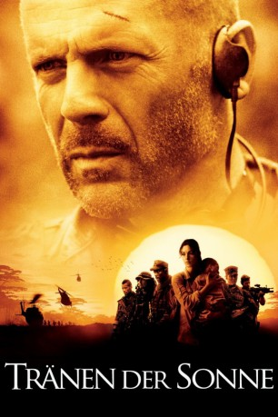

#1602 Tränen der Sonne
Alternativ: Tears of the Sun
 
 IMDB-Wertung: 6.6 / 10
IMDB-Wertung: 6.6 / 10  Metascore: 48
Metascore: 48 
Ein Routineauftrag wird für A. K. Waters, Lieutenant einer acht Mann starken Navy-Spezialeinheit, zur Gewissensprobe: aus einem Krisengebiet in Afrika soll die Amerikanerin Dr. Kendricks gerettet werden, die mitten im Dschungel ein Missionskrankenhaus leitet, während das Land um sie herum vom Bürgerkrieg zerrüttet wird. Alles verläuft nach Plan, bis sich Kendricks weigert, die Menschen zurückzulassen, die in der Mission auf Schutz und Hilfe gehofft hatten, und Waters und seine Männer Zeuge werden, wie brutal die Rebellen gegen die Bevölkerung vorgehen. Entgegen den strikten Anweisungen seines Captains Bill Rhodes entscheidet Waters schließlich, sein eigenes Leben und das der Truppe zu riskieren, um die Dorfbewohner auf einem gefährlichen Marsch durch den Dschungel zur nahen Grenze zu leiten.
Jahr: 2003
Dauer: 121 Minuten
FSK: 16
Land: USA Studio: Columbia PicturesTonspuren:
Untertitel:
Auflösung: 1080p (1920x800) Größe: 10240 MB
Genre: Action, Drama, Thriller, Krieg
Regisseur:  Antoine Fuqua
Antoine Fuqua
Drehbuch: Alex Lasker, Patrick Cirillo
Soundtrack: Lisa Gerrard, Hans Zimmer
Darsteller:
 Bruce Willis als Lieutenant A.K. Waters
Bruce Willis als Lieutenant A.K. Waters Monica Bellucci als Dr. Lena Fiore Kendricks
Monica Bellucci als Dr. Lena Fiore Kendricks Cole Hauser als James 'Red' Atkins
Cole Hauser als James 'Red' Atkins Eamonn Walker als Ellis 'Zee' Pettigrew
Eamonn Walker als Ellis 'Zee' Pettigrew Johnny Messner als Kelly Lake
Johnny Messner als Kelly Lake Nick Chinlund als Michael 'Slo' Slowenski
Nick Chinlund als Michael 'Slo' Slowenski- Charles Ingram als Demetrius 'Silk' Owens
- Paul Francis als Danny 'Doc' Kelley
- Chad Smith als Jason 'Flea' Mabry
 Tom Skerritt als Captain Bill Rhodes
Tom Skerritt als Captain Bill Rhodes Malick Bowens als Colonel Idris Sadick
Malick Bowens als Colonel Idris Sadick- Akosua Busia als Patience
- Fabrice Yahve Habimana Jr. als Bujo
 Sammi Rotibi als Arthur Azuka
Sammi Rotibi als Arthur Azuka- Benjamin A. Onyango als Colonel Emanuel Okeze
 Jimmy Jean-Louis als Gideon
Jimmy Jean-Louis als Gideon Fionnula Flanagan als Sister Grace
Fionnula Flanagan als Sister Grace- Cornelia Hayes O'Herlihy als Sister Siobhan
 Peter Mensah als Terwase
Peter Mensah als Terwase- Kobby Dankyi als Rebel Officer
- Allison Dean als Rape Victim
- Rodney Charles als Christopher Marwa
- Jewel McDonald als Village Woman
 Harry Van Gorkum als Carrier Reporter
Harry Van Gorkum als Carrier Reporter- Michael Clossin als Rhodes' Aide
- Awino Gam als Refugee
- Mark Bedell als F-18 Pilot , uncredited
 Justin Rodgers Hall als Rebel Soldier , uncredited
Justin Rodgers Hall als Rebel Soldier , uncredited- Jordan Kirkwood als Navy Seal , uncredited
- Awaovieyi Agie als Musa
- Hadar Busia-Singleton als Amaka
- Ida Onyango als Lasana
- Pierrino Mascarino als Father Gianni
- Howard Mungo als President Samuel Azuka
- Kanayo Chiemelu als General Mustafa Yakubu
- Nkeonye Nwankwo als Refugee Woman
- Alpha Osman Davis als Alpha
- Morris Sesay als Man with Goat
- Cle Sloan als Mission Rebel
- Lahai Fahnbulleh als Injured Old Man
- George Reid als Tortured Villager
- Yannick Doth als Teenage Rebel Soldier
- Ousmane Sall als Village Attacker
- Randall J. Gillet als Seahawk Pilot
- William Wood als Carrier Corpsman
- Chinyere A. Joyce als Chanting Woman
- Martha Neavill als Chanting Woman
- Gerald Michael Burch als Refugee Camp Guard
- Frederick Harris Jr. als Refugee Camp Guard
- Elton C. Garner Jr. als Refugee Camp Guard
Datei: X:\2003(N-Z)\Tränen der Sonne (2003, FSK16, 1920x800).mkv seit 24.07.2015
Festplatte: HD 2003-2004-2005(A-F)
 Es gibt insgesamt 46 Filme in der Gruppe '2003(N-Z)'
Es gibt insgesamt 46 Filme in der Gruppe '2003(N-Z)'